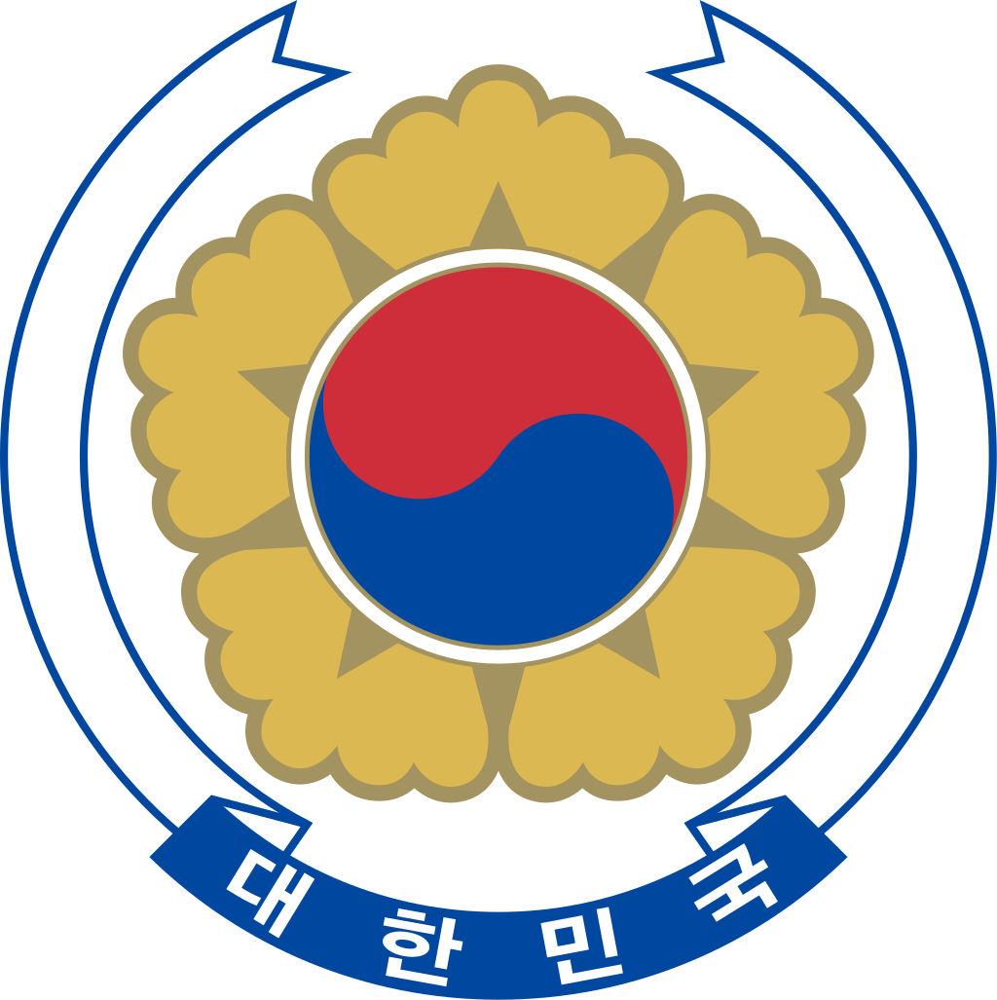
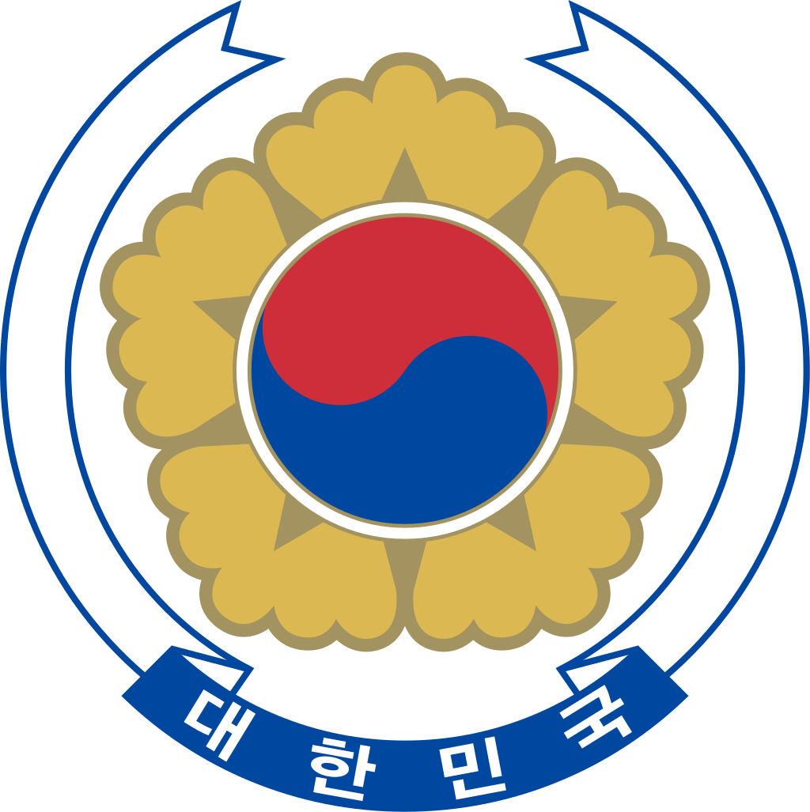

Celkový přehled
Jižní Korea, plným názvem Korejská republika, je stát ve východní Asii, zaujímající jižní polovinu Korejského poloostrova. Jeho jediným přímým sousedem je Severní Korea. Jinak je obklopen moři, Žlutým, Japonským a Východočínským.
Počet obyvatel přesahuje 51 milionů (2019). Největším a zároveň hlavním městem je Soul. V jeho metropolitní oblasti žije 25 milionů lidí, tedy takřka polovina jihokorejské populace. Soulská metropolitní oblast je pátá největší na světě. Další významná města jsou např. Pusan, Inčchon, Tegu nebo Tedžon. Úředním jazykem je korejština. Jižní Korea je zřízením prezidentská republika s demokratickou formou vlády, která se ukotvila pozvolna na konci 80. let 20. století.
Ačkoli po korejské válce patřila Jižní Korea mezi nejchudší státy světa, od té doby její ekonomika zaznamenala rapidní růst a zařadila se mezi asijské tygry. V 90. letech 20. století rostla tato ekonomika nejvíce na světě. Dnes je Jižní Korea plně vyspělým státem s ekonomikou světového významu. Je členem G 20, skupiny nejbohatších států světa. Samsung je největší elektronickou firmou planety. Země je pátým největším vývozcem na světě a osmým největším dovozcem. Je ovšem také pátým největším producentem emisí na obyvatele na světě.
Politika
Zřízení
Korejská republika je zřízením prezidentskou republikou. Hlavou státu a zároveň nejvyšším představitelem výkonné moci je prezident, volený ve všeobecných volbách na jedno volební období každých pět let. Prezident jmenuje premiéra a celý vládní kabinet, který musí odsouhlasit parlament. Poslední prezidentské volby se konaly v roce 2017. Zvítězil v nich Mun Če-in.
Druhou složkou moci je jednokomorový parlament Kukhwe (국회). Zástupci do korejského parlamentu (299 míst) jsou voleni ve všeobecných volbách, které se konají každé čtyři roky. Parlamentní systém je založen na několika politických stranách.
Otázka sjednocení
Otázka sjednocení země zůstává významným politickým tématem. V roce 2000 se konalo historicky první jednání mezi Severní a Jižní Koreou, přičemž Jih pokračuje v tzv. „sluneční politice“ směřující k dohodě. Od té doby pravidelné kontakty vedou k opatrnému oteplování vztahů. Průměrný obyvatel Jižní Koreje si naproti tomu překotné sjednocení se Severem příliš nepřeje. Mladí Korejci dnes již vidí sjednocení jako nemožné, tvrdí, že vzhledem k padesátileté izolaci mají dnes severní Korejci podstatně jiný jazyk, kulturu a zvyky a jsou svébytným národem. Po skoro sedmdesáti letech se definitivně zpřetrhávají i poslední pouta rozdělených rodin, a obě země tak již spojuje hlavně společná historie.
Ekonomika
Po konci korejské války patřila Jižní Korea deset let k nejchudším státům světa. HDP na hlavu v roce 1960 činil 79 amerických dolarů, což bylo méně než ve většině jihoamerických a některých afrických zemích. V roce 1963 se chopil moci diktátor Pak Čong-hui. Provedl zásadní reformy a rozhodl se vybudovat silně exportní ekonomiku. Právě jemu je připisována proměna Jižní Koreje v asijského tygra. Infrastrukturu financoval především z japonských investic, s čímž byla spojena normalizace korejsko-japonských vztahů, která vyvrcholila smlouvou o vzájemných vztazích z roku 1965.
Někdy se tomuto ekonomickému zázraku říká Zázrak na řece Han. Stál na úspěchu firem jako Hyundai (nejde však jen o automobily, spadají pod ní také největší loděnice na světě), Daewoo či Kia, nebo technologické společnosti Samsung a LG, schopné se prosadit na světových trzích: V roce 2014 byla Jižní Korea pátým největším exportérem světa. Nejvíce vývozu míří do Číny (24,8 % v roce 2017). Stejně tak na dovozu se nejvíce podílí ČLR. Jižní Korea musí dovážet především ropu.
Co však Koreji nepopiratelně vyšlo, byla sázka na informační technologie v 70. letech (tedy v době, kdy o výnosnosti a perspektivnosti tohoto odvětví nebylo zdaleka rozhodnuto). Jižní Korea je v současnosti největším světovým výrobcem paměťových čipů, obrazovek a displejů. Samsung je největší elektronickou firmou světa.
 

Vlajka
Vlajka Jižní Koreje, v korejštině oficiálně nazývaná Tchägukki (태극기 / 太極旗), je tvořena bílým listem, v jehož středu se nachází tchäguk (태극) t.j. červeno-modrý symbol jin a jang ve tvaru ležaté ho písmene S (modrá část je dole a červená nahoře). V každém ze čtyř rohů se nachází jeden trigram, kombinace tří plných a přerušovaných černých, rovnoběžných čar.
Znak
Státní znak Jižní Koreje, zvaný Naramunjang nebo také Gukjang, je tvořen symbolem t'aeguk (který je i na vlajce), obklopený pěti zlatými okvětními lístky korejské národní květiny ibišku syrského, korejsky zvaným Mugunghwa. Emblém je asi ze dvou třetin obklopen stříbrnou, dvakrát přeloženou stuhou s konci ve tvaru vlaštovčího ocasu. Prostřední část stuhy v dolní části je modrá, se stříbrným nápisem. Nápis je Tehan minguk (대한민국) (česky Korejská republika). Květem ibišku se v Koreji vítají hosté. Na znaku symbolizuje přání brzkého sjednocení obou korejských států.
Základní údaje
Geografie

| Hlavní město | Soul |
|---|---|
| Rozloha | 98 480 km2 (107. na světě) z toho zanedbatelné % vodní plochy |
| Nejvyšší bod | Halla-san (1949 m n. m.) |
| Poloha | 36° s. š., 128° v. d. |
Obyvatelstvo
| Počet obyvatel | 51 709 098 (27. na světě, 2019) |
|---|---|
| Hustota zalidnění | 492 ob. / km2 (20. na světě) |
| Jazyk | korejština (úřední) |
| Náboženství |
|
Státní útvar
| Státní zřízení | prezidentská republika |
|---|---|
| Prezident | Mun Če-in (문재인 ; 文在寅) |
| Předseda vlády | Chung Sye-kyun (정세균 ; 丁世均) |
| Měna | jihokorejský won (KRW) |